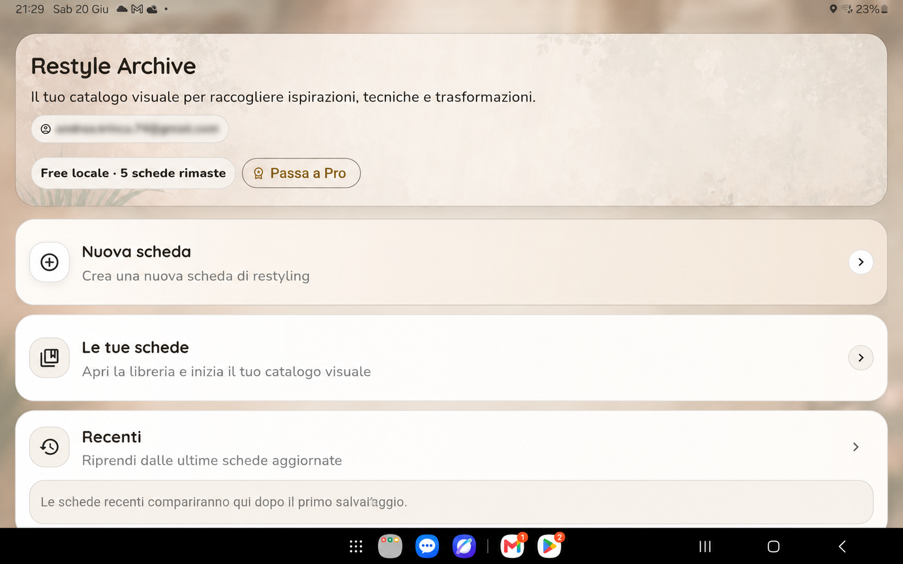
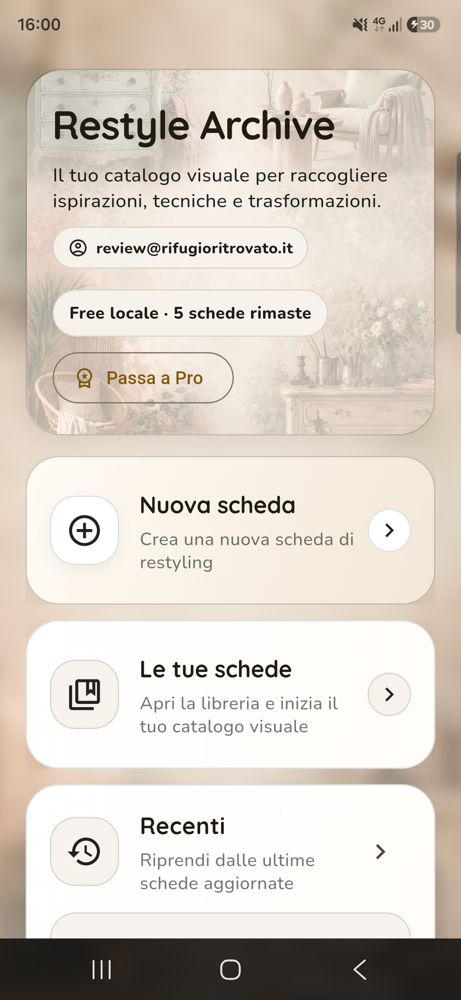
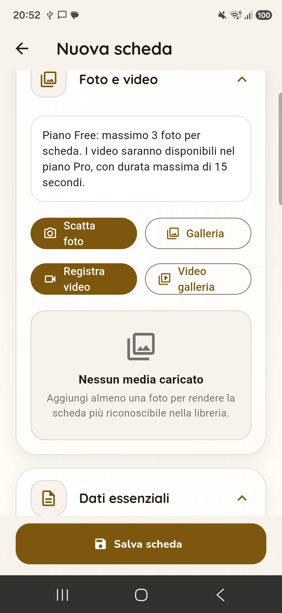
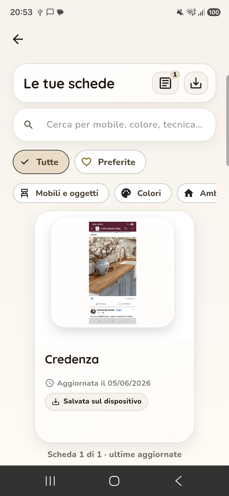
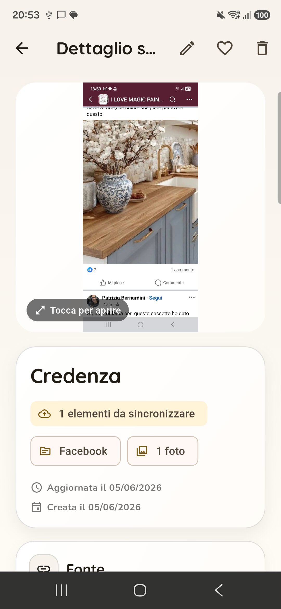

Catalogare i progetti
Crea schede ordinate per i tuoi lavori di restyling, recupero e decorazione.
Zephyros Studio presenta
Il tuo archivio personale per organizzare progetti di restyling, recupero mobili, decorazione e trasformazione di oggetti.

Cos’è Restyle Archive
Restyle Archive è un archivio personale per organizzare progetti di restyling creativo, recupero mobili, decorazione e trasformazione di oggetti.
Con Restyle Archive puoi creare schede dedicate ai tuoi lavori, aggiungere foto, descrizioni, materiali, tecniche, colori, note personali e riferimenti utili. L’app ti aiuta a tenere traccia delle idee, dei progetti iniziati, delle prove colore e dei risultati finali, senza disperdere tutto tra galleria fotografica, appunti e messaggi.
Cosa puoi fare
Crea schede ordinate per i tuoi lavori di restyling, recupero e decorazione.
Conserva immagini del prima, durante e dopo, insieme alle informazioni del progetto.
Tieni traccia di colori, finiture, materiali utilizzati, procedure e note personali.
Organizza le schede per ritrovare più facilmente idee, ispirazioni e lavori già realizzati.
Raccogli riferimenti utili, fonti, immagini e appunti senza disperderli tra più strumenti.
Crea un backup ZIP manuale dei tuoi contenuti per conservarli o trasferirli.
Schermate




Per chi è pensata
Restyle Archive è pensata per hobbisti, creativi, artigiani, appassionati di home decor e per chi ama dare nuova vita a mobili e oggetti.
La versione iniziale dell’app offre una gestione locale delle schede e strumenti di backup manuale. Alcune funzionalità avanzate potranno essere introdotte nelle versioni successive.